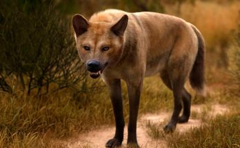

Ужасный волк
Ужасный волк (лат. Aenocyon dirus) — вид вымерших млекопитающих из семейства псовых, существовавший в эпоху плейстоцена (250 000–13 000 лет назад) на территории Северной Америки.
Ужасный волк (лат. Aenocyon dirus) — вид вымерших млекопитающих из семейства псовых, существовавший в эпоху плейстоцена (250 000–13 000 лет назад) на территории Северной Америки.
Додо (маврикийский дронт, лат. Raphus cucullatus) — вымерший вид нелетающей птицы из монотипического рода Raphus подсемейства дронтовых.
Мамонт (лат. Mammuthus) — вымершее млекопитающее семейства слоновых.

Динозавры (лат. Dinosauria) — вымершие пресмыкающиеся, которые жили на Земле миллионы лет назад.

Мегалодон (лат. Otodus megalodon или Carcharocles megalodon) — вид вымерших акул из семейства Otodontidae. Существовал в миоцене и плиоцене, хотя есть некоторые спорные данные о более древних и о более новых находках.
Птеродактиль (лат. Pterodactylus, от греч. πτεροδάκτυλος, pterodaktulos — «крылатый палец») — род птерозавров, ископаемые остатки представителей которого были обнаружены преимущественно в Зольнхофенских известняках Германии, которые датируются концом юрского периода (ранний титон), 152,1–145 млн лет назад.
Титанобоа (лат. Titanoboa cerrejonensis) — вид вымершей змеи, единственный в роде Titanoboa. Жил в эпоху палеоцена, около 60 миллионов лет назад.

Свиноногий бандикут (Chaeropus ecaudatus) — исчезнувший вид сумчатых млекопитающих, вид рода свиноногих бандикутов (Chaeropus) и семейства Chaeropodidae. Был эндемиком Австралии

Саблезубые кошки (лат. Machairodontinae) — вымершее подсемейство кошачьих. Часто называют «саблезубыми тиграми», но это название вводит в заблуждение — саблезубые кошки не были тиграми в современном понимании.